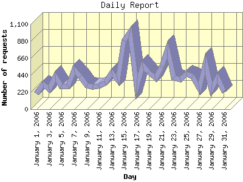

Report generated by Analog 6.0 and Report Magic 2.21
|
Web Server Statistics for "Harish Narayanan (hnarayan) - January 2006" Report generated by Analog 6.0 and Report Magic 2.21 |
The Daily Report identifies the activity for each day within the reporting period. Remember that one page hit can result in several server requests as the images for each page are loaded.

| Day | Number of requests | Number of bytes transferred | Percentage of the bytes | Percentage of the requests | |
|---|---|---|---|---|---|
| 1. | January 1, 2006 | 203 | 5.633 MB | 0.91% | 1.54% |
| 2. | January 2, 2006 | 320 | 20.443 MB | 3.32% | 2.43% |
| 3. | January 3, 2006 | 256 | 11.409 MB | 1.85% | 1.94% |
| 4. | January 4, 2006 | 425 | 19.455 MB | 3.16% | 3.23% |
| 5. | January 5, 2006 | 299 | 13.896 MB | 2.25% | 2.27% |
| 6. | January 6, 2006 | 302 | 18.896 MB | 3.07% | 2.29% |
| 7. | January 7, 2006 | 513 | 18.322 MB | 2.97% | 3.89% |
| 8. | January 8, 2006 | 423 | 18.979 MB | 3.08% | 3.21% |
| 9. | January 9, 2006 | 304 | 24.849 MB | 4.03% | 2.31% |
| 10. | January 10, 2006 | 288 | 17.182 MB | 2.79% | 2.19% |
| 11. | January 11, 2006 | 298 | 18.703 MB | 3.04% | 2.26% |
| 12. | January 12, 2006 | 339 | 18.370 MB | 2.98% | 2.57% |
| 13. | January 13, 2006 | 469 | 14.571 MB | 2.37% | 3.56% |
| 14. | January 14, 2006 | 380 | 22.250 MB | 3.61% | 2.88% |
| 15. | January 15, 2006 | 886 | 32.954 MB | 5.35% | 6.72% |
| 16. | January 16, 2006 | 1,001 | 28.946 MB | 4.70% | 7.60% |
| 17. | January 17, 2006 | 292 | 17.595 MB | 2.86% | 2.22% |
| 18. | January 18, 2006 | 564 | 18.682 MB | 3.03% | 4.28% |
| 19. | January 19, 2006 | 480 | 26.043 MB | 4.23% | 3.64% |
| 20. | January 20, 2006 | 397 | 13.300 MB | 2.16% | 3.01% |
| 21. | January 21, 2006 | 549 | 35.274 MB | 5.72% | 4.17% |
| 22. | January 22, 2006 | 780 | 26.292 MB | 4.27% | 5.92% |
| 23. | January 23, 2006 | 405 | 21.336 MB | 3.46% | 3.07% |
| 24. | January 24, 2006 | 384 | 19.398 MB | 3.15% | 2.91% |
| 25. | January 25, 2006 | 455 | 26.186 MB | 4.25% | 3.45% |
| 26. | January 26, 2006 | 428 | 21.337 MB | 3.46% | 3.25% |
| 27. | January 27, 2006 | 264 | 17.611 MB | 2.86% | 2.00% |
| 28. | January 28, 2006 | 588 | 30.311 MB | 4.92% | 4.46% |
| 29. | January 29, 2006 | 256 | 14.843 MB | 2.41% | 1.94% |
| 30. | January 30, 2006 | 409 | 14.469 MB | 2.35% | 3.10% |
| 31. | January 31, 2006 | 221 | 8.626 MB | 1.40% | 1.68% |
Most active day January 16, 2006 : 657 pages sent. 1,001 requests handled. 30,351,715.00 served.
Daily average: 425 requests handled. 19.876 MB served.
This report was generated on April 27, 2006 10:34.
Report time frame January 1, 2006 00:16 to January 31, 2006 23:58.
| Web statistics report produced by: | |
 Analog 6.0 Analog 6.0 |  Report Magic 2.21 Report Magic 2.21 |